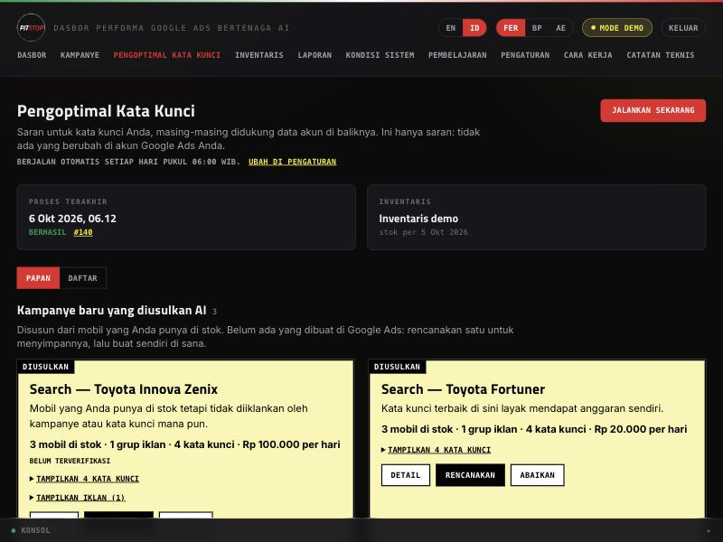
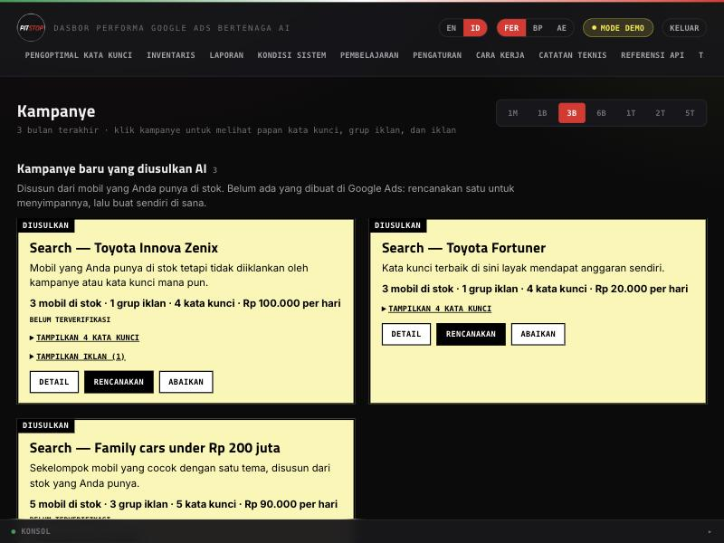
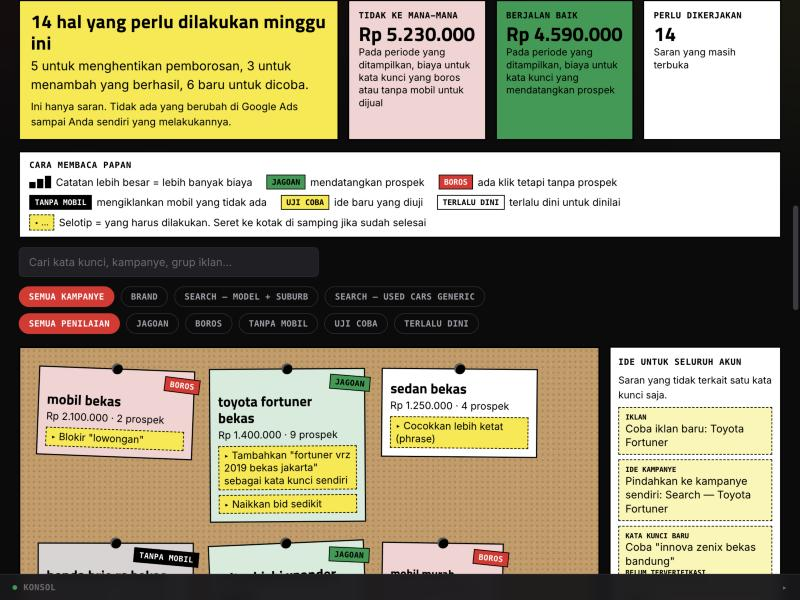
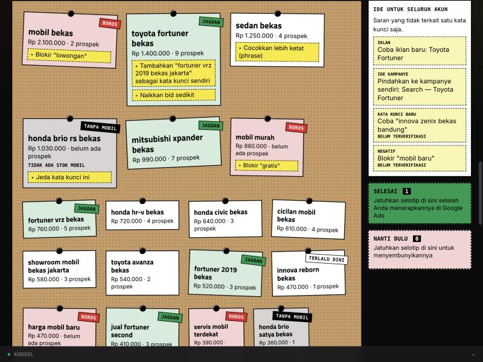
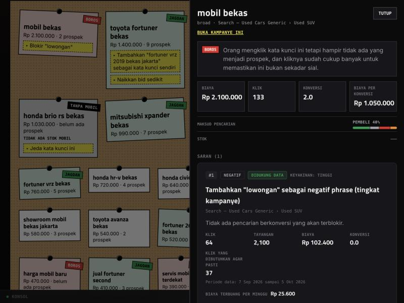
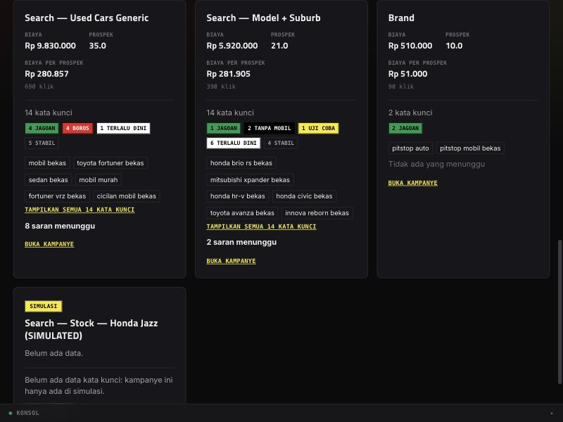
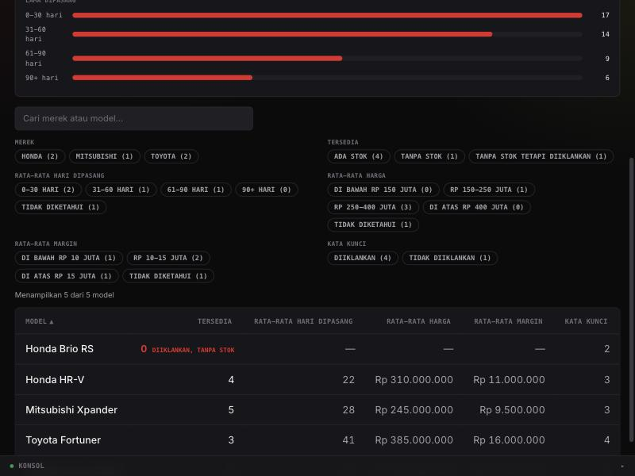
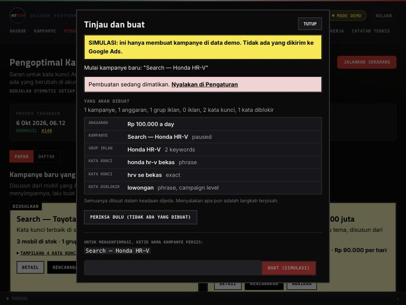
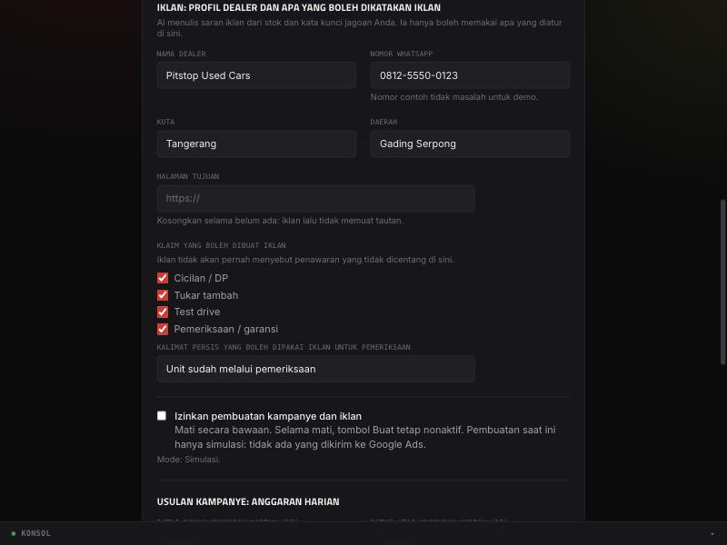

Dasbor performa Google Ads bertenaga AI untuk dealer mobil bekas: apa isinya, bagaimana memakainya, dan apa arti setiap warna, tombol, dan angka.
Pitstop menarik data performa dari akun Google Ads, menyimpannya dari waktu ke waktu, lalu menjalankannya lewat tim kecil agen AI yang menganalisis, merekomendasikan tindakan, dan merangkum hasilnya. Setiap hari juga ada pengoptimal kata kunci yang mencari kata kunci yang boros, kata kunci yang layak ditambah, kampanye dan iklan baru yang pantas dibuat, dengan memperhatikan mobil yang benar-benar ada di stok.
Kode (SQL dan statistik) yang menentukan kandidat dan semua angkanya. Model AI (Kai) hanya menyusun peringkat dan menjelaskan. Agen penilai (Ciri) memeriksa hasilnya dan memberi nilai A sampai F. Jadi angka di layar tidak pernah “dikarang” oleh AI, dan jawaban “belum cukup data” dianggap jawaban yang sah.
| Akun | Bisa apa |
|---|---|
| Pemilik | Semuanya: menandai saran, merencanakan dan membuat kampanye (simulasi), menjalankan proses sekarang, mengubah Pengaturan, memakai Aska, melihat halaman dokumentasi teknis. |
| Demo (hanya-baca) | Melihat semua halaman data dan juga Pengaturan (hanya untuk dibaca: isiannya terkunci dan tombol Simpan tidak ada), tetapi tidak bisa mengubah apa pun. Menu Aska, Mesin Waktu, Cara Kerja, Catatan Teknis, dan Referensi API tidak ditampilkan. Larangan menulis dijaga di server, bukan hanya tombol yang disembunyikan. |
| Menu | Untuk apa | Akun |
|---|---|---|
| Dasbor | Performa akun dalam grafik, ringkasan laporan AI terbaru, dan daftar kampanye. | Semua |
| Kampanye | Kartu setiap kampanye (biaya, prospek, biaya per prospek, kata kunci dan penilaiannya), serta usulan kampanye baru dari AI. | Semua |
| Pengoptimal Kata Kunci | Halaman utama. Papan kata kunci, usulan kampanye dan iklan, saran harian, dan tombol Jalankan sekarang. | Semua (Pemilik bisa bertindak) |
| Inventaris | Stok mobil per model: jumlah, lama dipasang, harga, margin, dan apakah modelnya sedang diiklankan. | Semua |
| Laporan | Laporan harian dan mingguan hasil kerja AI (analisis, rekomendasi, ringkasan) lengkap dengan nilai dari Ciri. | Semua |
| Kondisi Sistem | Apakah semuanya berjalan sendiri dengan benar: proses terakhir, penanda “sistem diam”, log setiap proses, dan biayanya. | Semua |
| Pembelajaran | Bagaimana nilai Ciri berubah dari minggu ke minggu dan riwayat usulan perbaikan prompt. | Semua |
| Pengaturan | Jam proses otomatis, email laporan, profil dealer, klaim iklan, anggaran harian, dan sakelar pembuatan. Akun Demo bisa melihatnya, tetapi tidak bisa mengubahnya. | Semua (Pemilik bisa mengubah) |
| Tanya Aska | Asisten umum: tanya apa saja tentang akun, lewat ketikan atau suara. | Pemilik |
| Cara Kerja, Catatan Teknis, Referensi API | Penjelasan teknis: agen-agennya, keputusan rancangan, dan daftar endpoint. | Pemilik |

Kartu kuning di paling atas adalah ide kampanye utuh yang disusun dari mobil di stok yang belum punya kampanye atau kata kunci. Tulisan DIUSULKAN di sudutnya menegaskan bahwa ini belum kampanye sungguhan. Setiap kartu menunjukkan jumlah mobil, grup iklan, kata kunci, dan anggaran harian yang disarankan.

Papan gabus berisi satu catatan untuk setiap kata kunci. Warna dan label di catatan memberi tahu apakah kata kunci itu sehat atau bermasalah, tanpa Anda perlu membaca angka.

| Label | Artinya |
|---|---|
| Jagoan | Mendatangkan prospek dengan harga bagus. Layak dipertahankan dan diberi lebih banyak. |
| Boros | Diklik cukup banyak tetapi hampir tidak ada yang jadi prospek. Sudah cukup klik untuk memastikan ini bukan sekadar sial. |
| Tanpa mobil | Anda membayar klik untuk mobil yang saat ini tidak ada di stok. |
| Uji coba | Ide baru yang sedang diuji dengan anggaran kecil yang dibatasi. |
| Terlalu dini | Klik belum cukup untuk menilai. Saran di sini hanya petunjuk, bukan temuan. |
| Tanpa label | Putih dan polos: baik-baik saja, tidak ada yang perlu diubah. |

Klik sebuah catatan atau selotip untuk membuka panel di sisi kanan. Tekan Esc, tombol Tutup, atau klik area gelap untuk menutupnya.

Tombol Daftar menampilkan semua saran sebagai kartu, dengan filter status (Terbuka, Direncanakan, Diterapkan, Diabaikan, Semua) dan filter jenis. Saran Negatif yang terbuka bisa diunduh atau disalin sebagai daftar untuk ditempel ke Google Ads Editor.

Satu kartu untuk setiap kampanye. Gunakan tombol periode di kanan atas (1M, 1B, 3B, 6B, 1T, 2T, 5T) untuk mengganti jangka waktunya; bawaan 3 bulan.
| Bagian kartu | Artinya |
|---|---|
| Biaya | Total uang yang dikeluarkan kampanye dalam periode itu. |
| Prospek | Jumlah konversi: telepon, klik WhatsApp, kunjungan halaman pembiayaan, dan sebagainya. |
| Biaya per prospek | Biaya dibagi prospek. Makin kecil makin baik. |
| Baris kata kunci | Jumlah kata kunci dan label penilaiannya (berapa yang Jagoan, Boros, dan seterusnya). |
| Daftar kata kunci | Beberapa kata kunci teratas menurut biaya. Tampilkan semua membuka seluruhnya. |
| N saran menunggu | Jumlah saran terbuka untuk kampanye ini. |
| SIMULASI | Kampanye hasil pembuatan simulasi. Tidak ada di Google Ads, tidak punya data performa, dan kata kuncinya baru muncul bila ada data. |

Stok mobil yang dijadikan patokan pengoptimal. Dari sinilah datang saran seperti “kata kunci untuk model yang tidak punya unit” dan ide kampanye baru.
Selain saran kata kunci, pengoptimal mengusulkan kampanye utuh dan iklan yang disusun dari stok dan kata kunci yang sudah terbukti. Anda bisa “membuatnya”, tetapi untuk saat ini itu hanya simulasi.

Iklan disusun dari templat oleh kode dan diperiksa: batas panjang (judul maksimal 30 karakter, deskripsi 90), hanya klaim yang Anda izinkan di Pengaturan, dan hanya angka yang ada di data stok (harga dibulatkan ke bawah ke juta penuh). Model AI hanya boleh memoles kata-katanya; bila hasil polesnya gagal pemeriksaan, templat aslinya yang dipakai.
| Alasan iklan | Artinya |
|---|---|
| Kampanye baru | Iklan untuk kampanye yang diusulkan. Dibuat bersama kampanyenya. |
| Iklan lemah | Menggantikan iklan yang kekuatannya rendah atau sedang pada grup iklan yang sudah ada. |
| Jagoan belum tercakup | Kata kunci jagoan yang katanya belum muncul di judul iklan mana pun pada grupnya. |
Iklan untuk grup iklan yang sudah ada punya tombol Tinjau dan buat sendiri; konfirmasinya adalah nama grup iklan.
Akun Pemilik mengubah isian lalu menekan Simpan di bagian bawah; akun Demo hanya bisa melihatnya (isian terkunci, tanpa tombol Simpan). Bila ada isian yang tidak valid, pesan merah muncul dan tidak ada yang tersimpan.

| Pengaturan | Fungsi |
|---|---|
| Buat dan kirim laporan otomatis | Bila dimatikan, laporan harian/mingguan terjadwal dilewati. Tombol “Buat laporan sekarang” tetap berfungsi. |
| Jam proses harian / mingguan | Dalam WIB (UTC+7), tidak peduli zona waktu server atau browser Anda. Laporan mingguan berjalan hari Senin. |
| Email penerima laporan | Setiap laporan dikirim ke sini. Kosongkan untuk hanya mencatatnya tanpa email. |
| Bahasa laporan | Bahasa yang dipakai agen AI saat menulis laporan. |
| Batas biaya bulanan (USD) | Pengaman biaya model AI. Bila biaya bulan ini mencapai batas, proses baru ditolak (bawaan 20). Kosong berarti tanpa batas. |
| Iklan: profil dealer | Nama dealer, nomor WhatsApp, kota, daerah, dan halaman tujuan. Dipakai sebagai satu-satunya sumber fakta dealer di teks iklan. Halaman tujuan boleh kosong; iklan lalu tidak memuat tautan. |
| Klaim yang boleh dibuat iklan | Cicilan/DP, tukar tambah, test drive, pemeriksaan/garansi. Iklan tidak akan menyebut tawaran yang tidak dicentang. Untuk pemeriksaan, Anda menentukan kalimat persisnya. |
| Izinkan pembuatan kampanye dan iklan | Sakelar pengaman. Mati secara bawaan. Mode saat ini hanya Simulasi. |
| Usulan kampanye: anggaran harian | Batas bawah dan batas atas (dalam rupiah bulat) untuk anggaran harian yang disarankan. |
| Jalankan pengoptimal kata kunci secara otomatis | Saklar proses harian otomatis. Terpisah dari laporan otomatis. “Jalankan sekarang” tetap berfungsi walau dimatikan. |
| Jam proses otomatis (WIB) | Kapan proses harian pengoptimal berjalan sendiri (bawaan 06.00). |
| Porsi anggaran uji | Seberapa besar bagian anggaran yang boleh dipakai untuk menguji ide baru (0 sampai 1). |
| Tingkat signifikansi | Seberapa kecil peluang “hanya kebetulan” yang diterima sebelum sebuah kata kunci dinilai boros (di atas 0, maksimal 1). Makin kecil makin ketat: butuh lebih banyak klik sebelum menyimpulkan. |
| Porsi margin untuk iklan, rasio prospek jadi penjualan | Dasar perhitungan anggaran harian usulan kampanye dari margin mobil. Isi dengan perkiraan jujur; angka ini langsung memengaruhi anggaran yang disarankan. |
Grafik performa dengan tombol periode yang sama (1M sampai 5T), daftar kampanye, dan bagian Laporan AI berisi ringkasan laporan terbaru dengan tautan Lihat laporan lengkap. Tombol “Apa maksud semua ini?” membuka penjelasan jenis kampanye dan metrik.
Daftar semua laporan harian dan mingguan. Laporan memuat tiga bagian berurutan: analisis (Anna), rekomendasi (Rico), dan ringkasan (Sammy). Setiap bagian memiliki nilai A–F dari Ciri; arahkan kursor ke lencana nilai untuk melihat alasannya.
Dibuat agar Anda tahu sistem berjalan tanpa dijaga: proses terakhir yang berhasil, penanda dead-man's-switch (menyala bila terlalu lama tidak ada proses berhasil, karena peringatan kegagalan tidak berbunyi bila jadwalnya sendiri tidak jalan), dan log setiap proses termasuk pesan kesalahannya. Klik Periksa pada sebuah proses untuk melihat jejak lengkap: data yang dibaca, setiap agen, setiap panggilan model, dan biayanya.
Menampilkan nilai Ciri dari minggu ke minggu per agen dan riwayat usulan perbaikan prompt. Usulan perbaikan tidak pernah diterapkan otomatis; selalu ditinjau manusia. Naiknya jumlah persetujuan belum tentu berarti laporan makin baik, jadi dua grafik ini dibaca bersama.
Asisten umum, tidak terikat pada satu laporan. Ketik pertanyaan, atau ketuk bola untuk bicara. Percakapan disimpan sebagai utas yang bisa diganti namanya atau dihapus.
Memungkinkan menetapkan keadaan (baik, buruk, mandek, bergejolak) untuk tanggal tertentu pada kalender simulasi. Hanya berguna untuk data buatan.
| Jenis | Artinya |
|---|---|
| Negatif | Blokir kata pencarian tertentu (misalnya “lowongan”) supaya iklan tidak tayang di sana. |
| Promosikan | Istilah pencarian yang sering berhasil dan layak dijadikan kata kunci sendiri. |
| Tipe pencocokan | Ubah cara kata kunci dicocokkan (misalnya ketatkan dari luas ke frasa). |
| Jeda | Hentikan kata kunci yang boros. |
| Ide kampanye | Pindahkan kata kunci yang berprestasi ke kampanye sendiri dengan anggarannya sendiri. |
| Kata kunci baru | Ide kata kunci dari stok yang sedang dipasang. |
| Bid | Kandidat untuk menaikkan bid pada kata kunci yang berhasil. |
| Kampanye baru | Kampanye utuh yang diusulkan dari stok (lihat bagian 7). |
| Iklan baru | Iklan responsif yang diusulkan (lihat bagian 7). |
| Status | Artinya |
|---|---|
| Terbuka | Baru, belum Anda tangani. |
| Direncanakan | Hanya untuk kampanye dan iklan baru: disimpan untuk dibuat. |
| Diterapkan | Anda sudah melakukannya di Google Ads (atau, untuk kampanye, dibuat lewat simulasi). |
| Diabaikan | Anda memutuskan tidak melakukannya. |
| Digantikan | Datanya berubah sehingga saran baru menggantikannya. Tidak bisa diubah lagi. |
| Istilah | Artinya |
|---|---|
| Prospek / konversi | Tindakan berharga dari pengunjung: telepon, klik WhatsApp, dan sebagainya. |
| Didukung data | Saran berdasar data akun Anda sendiri. |
| Belum terverifikasi | Saran hanya berdasar aturan umum karena data akun belum cukup. |
| Keyakinan | Seberapa kuat bukti di balik saran: rendah, sedang, tinggi. |
| SIMULASI | Dibuat di dalam aplikasi ini saja. Tidak ada di Google Ads. |
| Kai, Ciri, Anna, Rico, Sammy | Kai menyusun peringkat saran kata kunci. Anna menganalisis, Rico merekomendasikan, Sammy merangkum. Ciri menilai semuanya. |
| Dibatasi / ditandai | Bila Ciri masih menemukan masalah setelah dua kali revisi, laporan tetap terbit tetapi diberi tanda “ditandai”, terlihat jelas, tidak diam-diam. |
Tidak. Tidak ada jalur penulisan ke Google Ads. “Buat kampanye” hanya simulasi di dalam aplikasi.
Selama lencana Mode Demo tampil, datanya buatan (dengan pola yang disengaja agar AI punya sesuatu untuk ditemukan). Jalur Google Ads sungguhan sudah dibangun tetapi belum dicoba pada akun nyata.
Karena kliknya belum cukup untuk menyimpulkan apa pun. Sistem sengaja mengatakan “belum cukup data” daripada menebak.
Cek kalimat “Berjalan otomatis setiap hari pukul …” di bagian atas Pengoptimal. Bila tertulis mati, hidupkan di Pengaturan atau tekan Jalankan sekarang. Cek juga Kondisi Sistem untuk melihat apakah proses terakhir gagal.
Ada dua kemungkinan: proses lain sedang berjalan (tunggu selesai), atau batas biaya bulanan tercapai (naikkan di Pengaturan bila Anda memang ingin lanjut).
Sakelar Izinkan pembuatan kampanye dan iklan di Pengaturan masih mati. Itu pengaman yang disengaja. Bila Anda hidupkan, hanya simulasi yang terjadi.
Demo hanya bisa melihat. Semua tombol yang menulis disembunyikan, dan server juga menolak setiap permintaan menulis dari akun Demo.